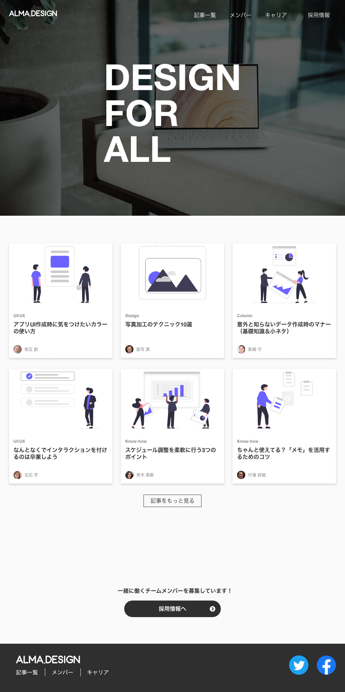

work detail
デザイナーズブログのトップページ

-
概要
会社のデザインチームの存在を広め、共に働くデザイナーを集うために作成。
-
ターゲット
UIデザイナー / グラフィックデザイナー / WEBデザイナー / フロントエンドエンジニア
-
意識した点
用件定義に「プレーンで万人受けするもの」とあったので、色による印象操作を避けてグレーベースで作成。文字や画像の邪魔をせず、記事一つ一つの境目が分かりやすいレイアウトを心がけました。
モバイル版はナビバーで上部がごちゃごちゃしないようメニューにまとめました。 -
担当部分
全て（デザイン / コーディング）
-
制作時間
一週間
-
使用ツール
XD / VScode
-
URL
https://tas9.github.io/almadesign/